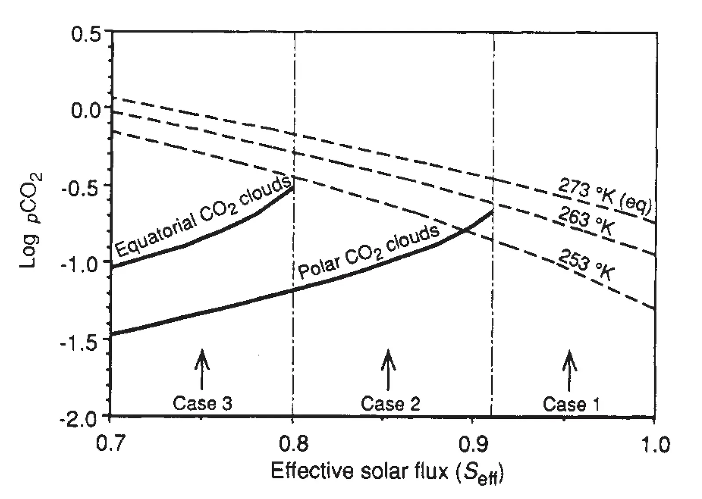

Susceptibility of the early Earth to irreversible glaciation caused by carbon dioxide clouds
Key finding. Because atmospheric CO2 responds over more than 100,000 years while sea ice and snow cover respond in under a year, the silicate-weathering feedback cannot buffer the early Earth against a rapid excursion in the ice line, and simulations including the formation of highly reflective carbon dioxide clouds suggest that a transient global glaciation under the fainter early Sun could have been irreversible — the Earth might not be habitable today had it not been warm during the first part of its history.

What question did this research address?
Simple energy-balance climate models predict that a 2 to 5% drop in solar output sends the Earth into runaway glaciation. Yet solar luminosity was 25 to 30% lower early in Earth's history and the planet did not freeze permanently.
The standard answer is that high CO2, from faster outgassing and slower weathering, kept it warm — the silicate-weathering thermostat. This paper asked whether that thermostat is fast enough to be a real safeguard.
What did we find?
The timescale mismatch is the core of the argument. Atmospheric CO2 adjusts on more than 100,000 years; sea ice and snow cover adjust in less than a year. A weathering feedback that slow cannot stabilize the ice line against a fast perturbation.
Reanalysis of the earlier claim that the silicate-weathering feedback stabilizes the ice line at low latitudes finds it incorrect. A perturbation analysis shows there is no stable ice line closer to the Equator than about 30 degrees latitude, whatever the CO2 partial pressure — so a low-latitude glaciation should run away to a globally ice-covered state.
A zonally averaged energy-balance model that allows CO2-ice clouds to form gives four steady states at today's solar flux and CO2 level: ice-free, stable partial ice cover, unstable partial ice cover, and ice-covered.
From today's stable partial ice cover, a perturbation to an ice-covered state would let about 0.12 bar of volcanic CO2 accumulate within 30 million years, which is enough to make the ice-covered state unstable and return the planet to ice-free.
Under the fainter early Sun this escape route can close. If CO2 clouds form before the ice begins melting — the paper's Case 2 and Case 3 — the added reflectivity means CO2 warming would probably be incapable of melting off the ice.
Why does it matter?
It identifies a genuine failure mode for the mechanism usually credited with keeping Earth habitable. The silicate-weathering thermostat works over millions of years; ice albedo works in a season. A thermostat cannot stop a fire that spreads faster than it can respond.
Condensing CO2 into clouds turns the greenhouse gas into a reflector. That reversal is why piling on more CO2 does not always dig a frozen planet out, and it matters for early Mars as much as for early Earth.
The conclusion is a statement about contingency rather than mechanism. Earth's habitability may depend on the historical accident of having been warm early, not only on a self-correcting feedback — which bears directly on how likely habitable planets are elsewhere.
Citation
Ken Caldeira and James F. Kasting (1992). Susceptibility of the early Earth to irreversible glaciation caused by carbon dioxide clouds. Nature 359, 226-228.
Related
- What does the deep-time record reveal about how the Earth system behaves?
- How long does a carbon dioxide emission go on warming the planet?
- The life span of the biosphere revisited (Caldeira and Kasting, 1992)
- Enhanced Cenozoic chemical weathering and the subduction of pelagic carbonate (Caldeira, 1992)
- Long-term control of atmospheric carbon dioxide: low-temperature seafloor alteration or terrestrial silicate-rock weathering? (Caldeira, 1995)